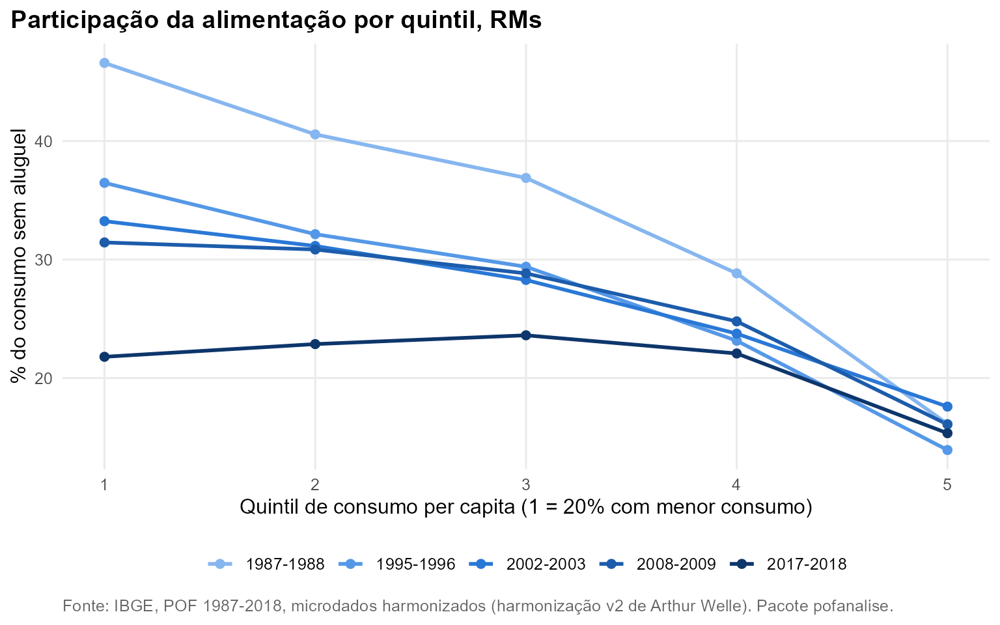
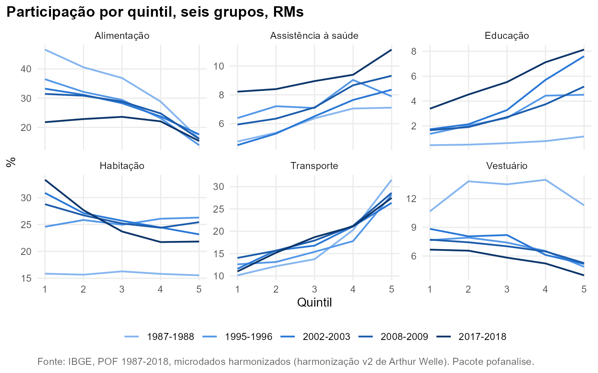

Pergunta. Como o peso de cada grupo varia entre famílias com diferentes níveis de consumo, e a Lei de Engel (a participação da alimentação cai quando o orçamento cresce) continua valendo?
Método. Quintis de despesa de consumo per capita,
ponderados por pessoa e calculados dentro de cada edição
(pof_add_quintis()); a renda não está harmonizada entre
edições. Conjunto das RMs, consumo sem aluguel. Elasticidade-despesa
pela especificação de Working-Leser (pof_engel()).
A curva de Engel achatou
Em 1987-1988 a alimentação pesava 46,6% do consumo do 1º quintil e 16,1% do 5º. Em 2017-2018, 21,8% e 15,3%. Entre o 1º e o 4º quintil a curva ficou quase plana: a diferença caiu de 17,8 para -0,3 pontos percentuais. A elasticidade-despesa da alimentação sobe de 0,72 para 0,93.

Da comida para a moradia
A razão entre a participação no 1º e no 5º quintil resume a inclinação: acima de 1, o grupo pesa mais para quem consome menos. Na alimentação a razão cai de 2,89 para 1,42. Na habitação sem aluguel (energia, água, gás, telefonia, manutenção), ela sobe de 1,02 para 1,53. No orçamento das famílias com menor consumo, o peso relativo se deslocou da comida para os serviços da moradia.

Elasticidades
| Grupo | 1987-1988 | 1995-1996 | 2002-2003 | 2008-2009 | 2017-2018 |
|---|---|---|---|---|---|
| Alimentação | 0,72 | 0,77 | 0,81 | 0,82 | 0,93 |
| Assistência à saúde | 1,08 | 1,01 | 1,19 | 1,08 | 1,06 |
| Despesas diversas | 1,55 | 1,38 | 1,34 | 1,29 | 1,47 |
| Educação | 1,42 | 1,43 | 1,59 | 1,55 | 1,43 |
| Habitação | 0,94 | 0,98 | 0,85 | 0,89 | 0,78 |
| Higiene e cuidados pessoais | 0,97 | 0,93 | 0,92 | 0,89 | 0,64 |
| Recreação e cultura | 1,20 | 1,23 | 1,33 | 1,20 | 1,10 |
| Serviços pessoais | 0,70 | 0,71 | 0,78 | 0,80 | 0,81 |
| Transporte | 1,44 | 1,30 | 1,32 | 1,31 | 1,37 |
| Vestuário | 1,07 | 0,92 | 0,86 | 0,90 | 0,90 |
Reproduzir
bs <- pof_add_quintis(pof_sem_aluguel(b))
pof_participacao(bs, "Alimentação", por = "Quintil_RM", filtro = quote(!is.na(RGMT)))
pof_engel(bs[!is.na(RGMT)], pof_grupos_consumo())